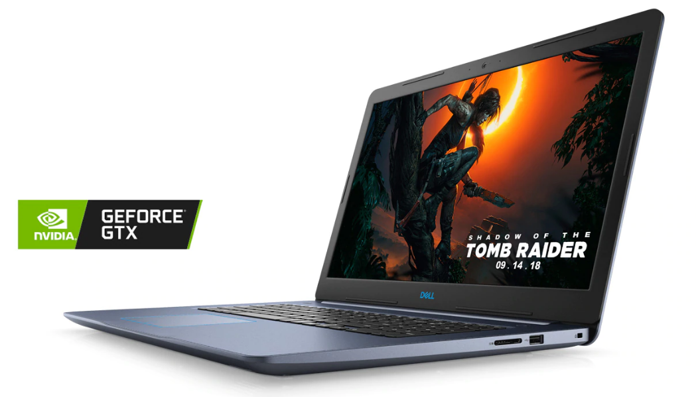

Dell G3 15
Technical SpecsProcessor : Intel 9th Generation i5/i7
OS : Windows 10
RAM : 8GB/16GB
Cores : 4/6
Storage SSD : 128GB/256GB
HDD : 1TB
GPU : Nvidia GTX 1050 / Nvidia GTX 1050 Ti / Nvidia GTX 1650 / Nvidia GTX 1660
ScreenSize : 15.6 inch
Brightness : 300 nits
Tru-tone : No
Resolution : 1920 x 1080 pixels
WebcamFront : 2 MP
Buy NowPrice : $699
Amazon :
Buy
Review
The Dell G3 is an entry level gaming laptop from Dell. This laptop has been in the market for some years now and has grown and developed quite a lot. The G3 is now slimmer, sleeker and has better specs with newer Intel processors and Nvidia Graphics. The 9th generation Intel H-series mobile processors are used in this laptop. The base variant of the G3 comes with Intel i5 processor and Nvidia GTX 1050 graphics card. This graphics card might seem pretty old, but offers good performance for the price. The G3 is rumored to get more updates and desgin changes this year and may integrate RTx graphics too. All in all the Dell G3 makes a good option for buyers who are looking for a performance laptop with casual gaming capabilities. Check out the Dell G3 15 in the link below.
Amazon Link: View